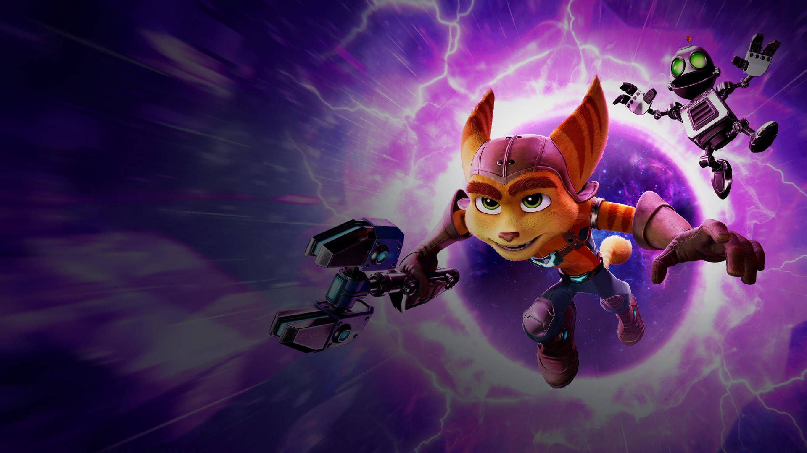
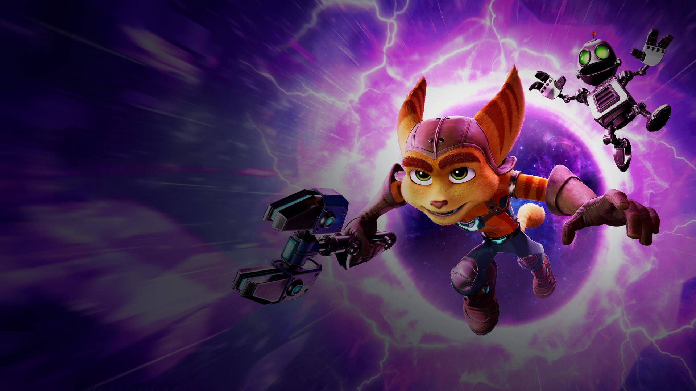

Что это за игра?
 

Ratchet & Clank — серия игр жанра платформер, разработанная компанией Insomniac Games эксклюзивно для приставок Sony PlayStation. Включает как первую игру — Ratchet & Clank (2002), так и последнюю — Ratchet & Clank: Rift Apart (2021). Игры повествуют о космических приключениях двух героев: Рэтчета — одного из последних представителей расы Ломбакс во Вселенной, и Кланка — маленького робота и напарника Рэтчета.
Геймплей


Игровой процесс условно можно разделить на две половины: платформер с прыжками и преодолением препятствий и экшен с толпами врагов. Некоторые особенности:
- Платформенная часть — поиск и применение разных гаджетов: энергетического лассо, ракетных ранцев, магнитных ботинок (позволяют ходить по некоторым вертикальным поверхностям).
- Боевая механика — противники заставляют переходить с дальнего боя на рукопашные драки, жонглировать разными видами оружия, подбирая подходящую под ситуацию пушку.
- Мини-игры — гонки или головоломки, которые игрок должен выполнять по мере прохождения.
Персонажи

Рэтчет (англ. Ratchet) — главный герой франшизы «Ratchet & Clank»,
являющийся основным играбельным персонажем большей части игр серии.
Будучи межгалактическим героем и механиком кораблей, Рэтчет также
является последним известным представителем расы Ломбакс в своей
Вселенной. Характер Рэтчета можно описать как упрямый, жаждущий
острых ощущений, проявляет храбрость и любит бросать вызов.
У него беззаботный характер, он часто отпускает остроты и
поднимает настроение шутками.
Кланк (англ. Clank) —
маленький робот, напарник Рэтчета. Обычно крепится к спине
Рэтчета. Кланк рациональный, умный и лояльный. Он всегда
имеет знания, которыми быстро делится с Рэтчетом, и обычно
балансирует и сдерживает импульсивные тенденции главного героя.

Капитан Кварк (англ. Captain Qwark) — персонаж серии игр Ratchet & Clank.
Обычно он играет второстепенную роль, но присутствует почти
во всех играх. Главная отличительная черта характера Кварка
(полное имя — Коперникус Лесли Кварк) — самовлюблённость. Ради того, чтобы
быть популярным и жить в роскоши, супергерой готов пойти даже
на самые злодейские поступки.

Доктор Нефариус (англ. Dr. Nefarious) — безумный робот-учёный
и суперзлодей. Безумен, но гениален. Жаждет обрести абсолютную власть,
для достижения целей готов уничтожить любого на своём пути.
Предпочитает презентации и драматический талант, что заставляет его неистово смеяться
над собственными злыми поступками.

Ривет (Rivet) — персонаж игры Ratchet & Clank: Rift
Apart, межпространственный аналог Рэтчета. Ривет не растеряла оптимизма,
несмотря на все пережитые испытания. Несмотря на суровый внешний вид и
кажущуюся отстранённость, она не бывает циничной, злой или жестокой.
Часто жертвует своей безопасностью и комфортом, чтобы защитить
других. Например, добровольно подвергла себя опасности, отдав свой маскировочный
костюм гражданскому лицу в Гнусном Городе.Страдает от ПТСР из-за потери руки и
прошлых неудач, с подозрением относится ко всем, кого встречает, как к потенциальной угрозе.